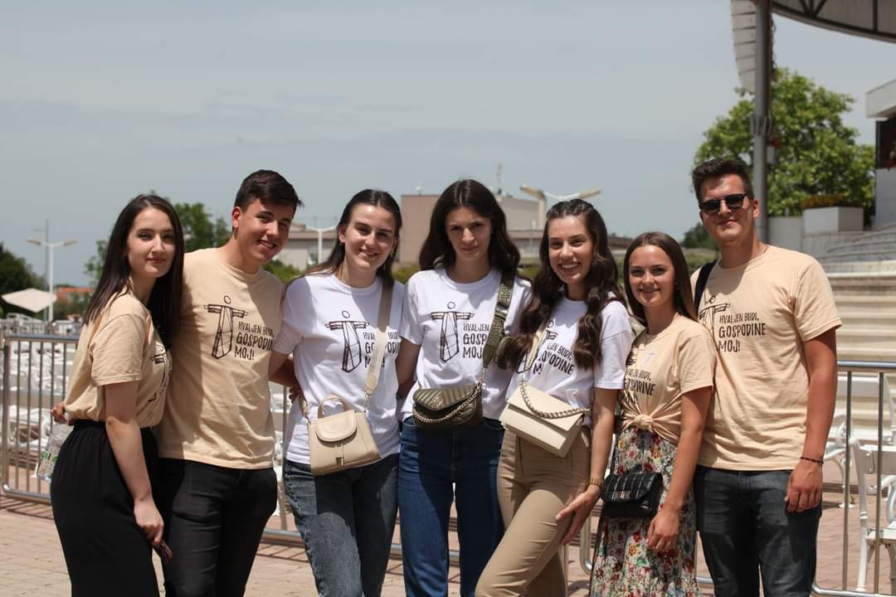
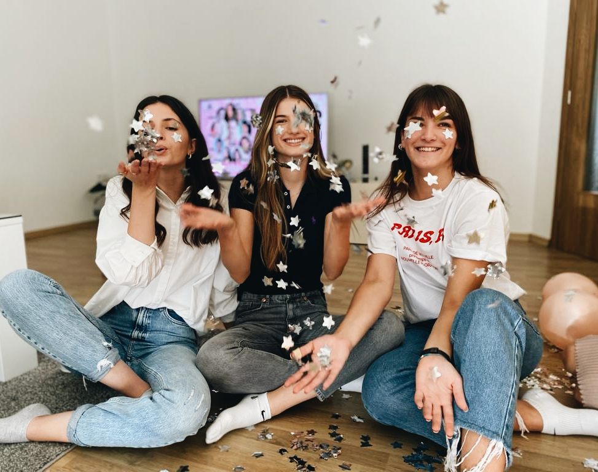

Na ovoj stranici ćete saznati nešto više o meni.
Fotografije će biti vezane uz stvari koje volim, a neki od njih su glazba i fotografija.
Moje fotografije:
Glazbom sam se krenula baviti u osnovnoj školi kada sam upisala glazbenu školu. Svirala sam klavir i bila član zbora.
Ovo je fotografija sa snimanja albuma gdje sam sudjelovala kao članica zbora. Jedna od nekoliko snimljenih pjesama se nalazi na linku. 
Nekoliko mojih fotografija.Meni jedna od najdražih fotografija. 